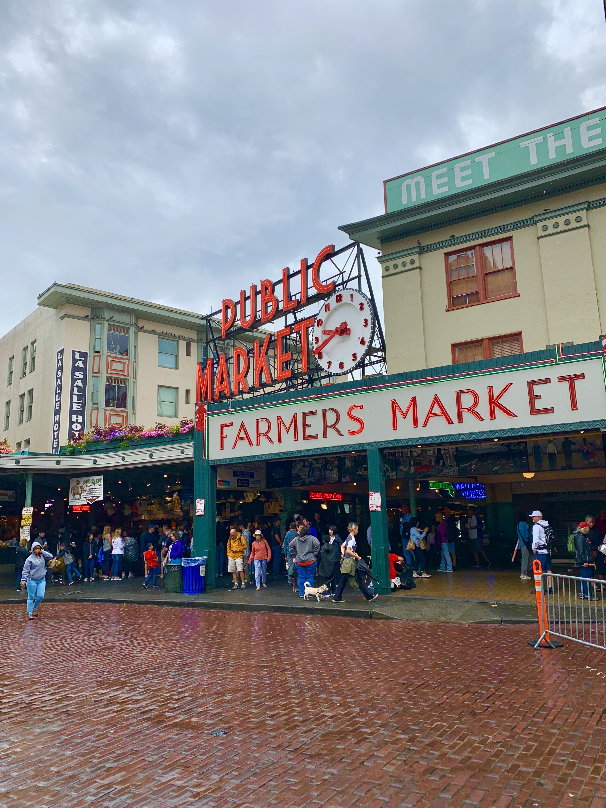

A packed fresh seafood venue at Seattle's Public Market

Public Market, downtown Seattle's iconic farmers market
Russian and Eastern European Bakery at Public Market serving delicious, fresh pastries and desserts
One of my favorite pieces of wall art in downtown Seattle

A vibrant, fresh fruit and vegetable stand at Public Market
Aboard the sailboat Cynthia, as we make our way to view Seattle from the water